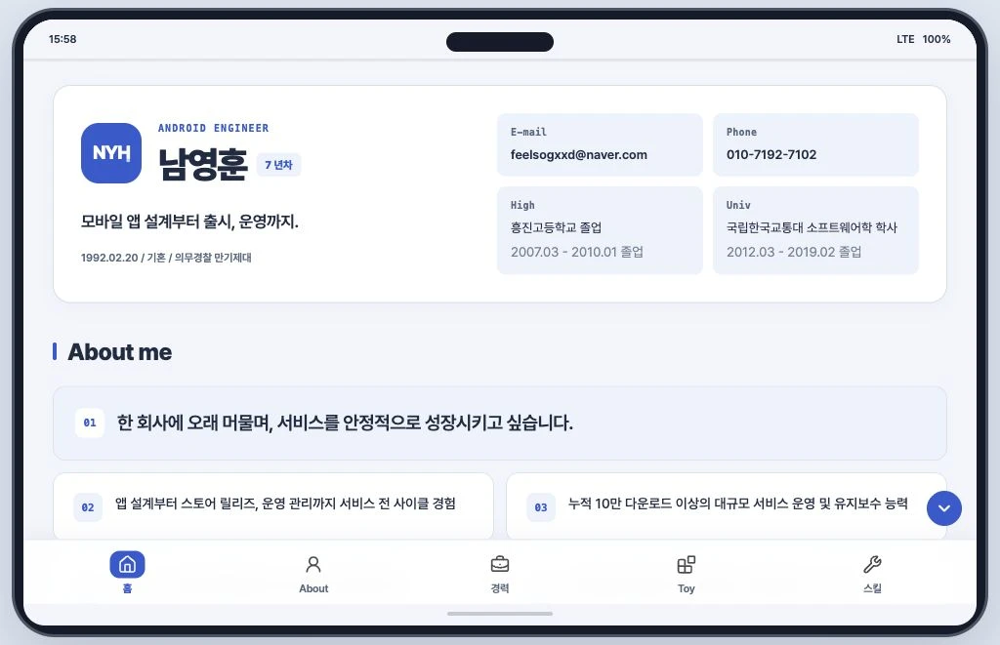
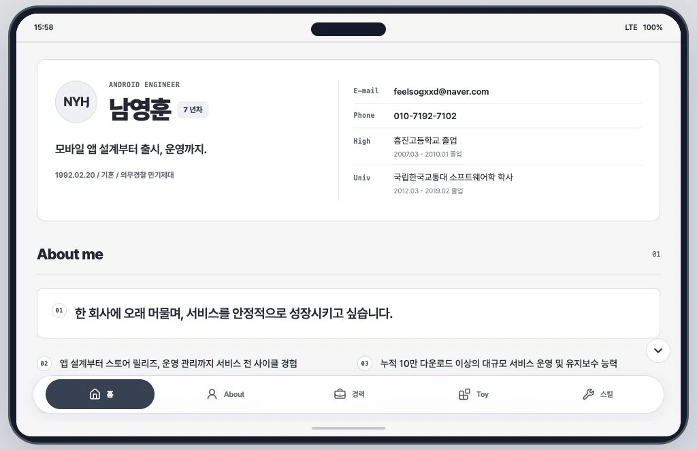
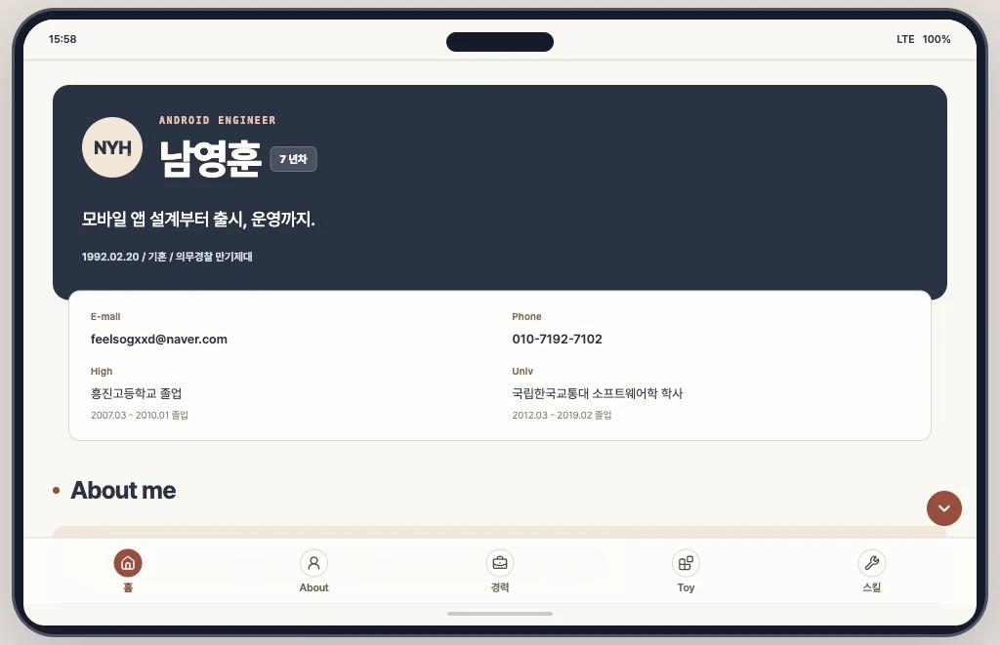

A1 / 정돈된 앱형
부드럽고 명확한 카드
프로필과 연락처를 나란히 정리하고, 회사와 담당 프로젝트를 하나의 카드 묶음으로 구성했습니다.
- 블루 포인트와 밝은 톤
- 회사별로 묶인 경력 카드
- 아이콘 배경으로 구분하는 메뉴
A / COMPONENT REFINEMENTS
프로필, 연락처와 학력, 첫 화면의 정보 배치를 비교합니다.

A1 / 정돈된 앱형
프로필과 연락처를 나란히 정리하고, 회사와 담당 프로젝트를 하나의 카드 묶음으로 구성했습니다.

A2 / 이력서형
데스크톱에서 회사 정보와 담당 업무를 좌우로 나눠 읽습니다. 모바일에서는 자연스럽게 한 열로 이어집니다.

A3 / 매거진형
프로필 헤더와 연락처 영역을 구분하고, 경력은 타임라인으로 연결했습니다. 여백과 얇은 선으로 내용을 정리합니다.